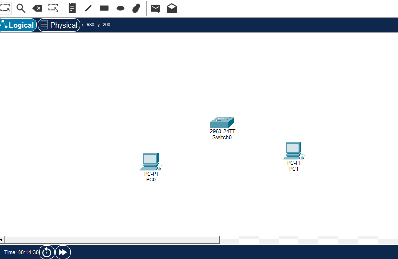

📡 Tutorial Packet Tracer
Analisi dei Pacchetti TCP/IP e ICMP (Ping) tra Due PC
🎯 Obiettivo del Tutorial: Imparare a utilizzare Cisco Packet Tracer per analizzare il contenuto dei pacchetti dati che vengono scambiati durante un comando ping tra due computer collegati tramite switch.
📋 Informazioni Preliminari
Scenario di Rete
PC1
192.168.0.10/24
━━━
Switch
━━━
PC2
192.168.0.20/24
| Dispositivo |
Indirizzo IP |
Subnet Mask |
Tipo Connessione |
| PC1 |
192.168.0.10 |
255.255.255.0 (/24) |
Ethernet (Copper Straight-Through) |
| Switch |
N/A (Layer 2) |
N/A |
- |
| PC2 |
192.168.0.20 |
255.255.255.0 (/24) |
Ethernet (Copper Straight-Through) |
📝 Nota Importante: Il comando ping utilizza il protocollo ICMP (Internet Control Message Protocol), che opera a livello di rete (Layer 3) e viene incapsulato in pacchetti IP. Anche se l'esercizio parla di TCP/IP, il ping usa specificatamente ICMP, non TCP.
🔧 Requisiti
- Software: Cisco Packet Tracer (versione 7.x o superiore)
- Conoscenze base: Modello OSI/TCP-IP, indirizzi IP, subnet mask
- Tempo stimato: 30-45 minuti
📚 Procedura Passo-Passo
1
Apertura di Packet Tracer e Creazione della Topologia
Azioni da compiere:
- Apri Cisco Packet Tracer
- Nella barra inferiore, seleziona la categoria "End Devices" (dispositivi finali)
- Clicca sull'icona del PC e trascinala nell'area di lavoro due volte per creare PC1 e PC2
- Seleziona la categoria "Network Devices" → "Switches"
- Trascina uno Switch 2960 (o simile) nell'area di lavoro, posizionandolo tra i due PC

2
Collegamento dei Dispositivi
Azioni da compiere:
- Clicca sull'icona del fulmine (Connections) nella barra inferiore
- Seleziona il cavo "Copper Straight-Through" (linea nera continua)
- Clicca su PC1, seleziona la porta
FastEthernet0
- Clicca sullo Switch, seleziona una porta libera (es.
FastEthernet0/1)
- Ripeti per collegare PC2 allo switch sulla porta
FastEthernet0/2
💡 Suggerimento: I pallini alle estremità dei cavi diventeranno verdi quando la connessione è attiva (potrebbero impiegare qualche secondo).
📸 Screenshot: Topologia completa con cavi collegati e pallini verdi
3
Configurazione di PC1
Azioni da compiere:
- Clicca su PC1 per aprire la finestra di configurazione
- Vai alla scheda "Desktop"
- Clicca su "IP Configuration"
- Inserisci i seguenti valori:
IP Address: 192.168.0.10
Subnet Mask: 255.255.255.0
Default Gateway: (lascia vuoto o 192.168.0.1)
- Chiudi la finestra di PC1
📸 Screenshot: Finestra IP Configuration di PC1 con i valori inseriti
4
Configurazione di PC2
Azioni da compiere:
- Clicca su PC2 per aprire la finestra di configurazione
- Vai alla scheda "Desktop"
- Clicca su "IP Configuration"
- Inserisci i seguenti valori:
IP Address: 192.168.0.20
Subnet Mask: 255.255.255.0
Default Gateway: (lascia vuoto o 192.168.0.1)
- Chiudi la finestra di PC2
📝 Verifica: Assicurati che entrambi i PC abbiano la subnet mask corretta (255.255.255.0) e siano nella stessa rete (192.168.0.0/24).
5
Attivazione della Modalità Simulazione
Azioni da compiere:
- Nell'angolo in basso a destra di Packet Tracer, clicca sul pulsante "Simulation" (icona con cronometro)
- Si aprirà il pannello di simulazione sulla destra dello schermo
- Verifica che la modalità sia passata da "Realtime" a "Simulation"
💡 Cos'è la Modalità Simulazione?
La modalità simulazione permette di visualizzare passo-passo il movimento dei pacchetti attraverso la rete, consentendo l'analisi dettagliata di ogni fase della comunicazione.
📸 Screenshot: Interfaccia con modalità Simulation attiva e pannello Event List visibile
6
Configurazione dei Filtri di Simulazione
Azioni da compiere:
- Nel pannello di simulazione, clicca su "Edit Filters"
- Deseleziona tutti i protocolli cliccando su "Show None"
- Seleziona manualmente solo:
ICMP (protocollo usato dal ping)ARP (necessario per la risoluzione degli indirizzi MAC)
- Chiudi la finestra dei filtri
📝 Perché filtrare? Filtrare i protocolli permette di concentrarsi solo sul traffico rilevante, evitando confusione con altri pacchetti che potrebbero transitare nella rete.
7
Esecuzione del Comando Ping
Azioni da compiere:
- Clicca su PC1
- Vai alla scheda "Desktop"
- Clicca su "Command Prompt"
- Nel prompt dei comandi, digita:
ping 192.168.0.20
- Premi Invio
- Osserva che nella finestra del prompt non appare immediatamente nulla (siamo in modalità simulazione)
- Non chiudere la finestra del Command Prompt
📸 Screenshot: Command Prompt di PC1 con il comando ping digitato
8
Analisi dei Pacchetti nella Simulazione
Azioni da compiere:
- Torna alla visualizzazione della topologia
- Nel pannello "Event List" sulla destra, vedrai apparire gli eventi dei pacchetti
- Clicca sul pulsante "Auto Capture / Play" oppure "Capture / Forward" per avanzare passo dopo passo
- Osserva i pacchetti che si muovono dalla rete:
- Prima vedrai pacchetti ARP (per scoprire l'indirizzo MAC di PC2)
- Poi vedrai pacchetti ICMP Echo Request (ping in uscita da PC1)
- Infine vedrai pacchetti ICMP Echo Reply (risposta di PC2)
💡 Sequenza tipica:
1. ARP Request (broadcast) da PC1
2. ARP Reply da PC2
3. ICMP Echo Request da PC1 a PC2
4. ICMP Echo Reply da PC2 a PC1
📸 Screenshot: Event List con la sequenza di pacchetti ARP e ICMP visibili
9
Analisi Dettagliata del Pacchetto ICMP
Azioni da compiere:
- Nell'Event List, individua un evento ICMP
- Clicca sul quadratino colorato nella colonna "Info" dell'evento ICMP
- Si aprirà la finestra "PDU Information" (Protocol Data Unit)
- In questa finestra vedrai:
- OSI Model: visualizzazione stratificata del pacchetto
- Outbound PDU Details: dettagli del pacchetto in uscita
- Inbound PDU Details: dettagli del pacchetto in entrata (se presente)
📸 Screenshot: Finestra PDU Information aperta con i layer del modello OSI visibili
10
Esaminare i Layer del Modello OSI
Azioni da compiere:
Nella finestra PDU Information, esplora ogni layer cliccando sulle schede:
Layer 1 - Physical Layer
Informazioni visualizzate:
- Porta fisica utilizzata
- Tipo di mezzo trasmissivo (Copper)
- Stato del link
Layer 2 - Data Link Layer (Ethernet)
Informazioni visualizzate:
- Destination MAC Address: Indirizzo MAC di destinazione (PC2)
- Source MAC Address: Indirizzo MAC sorgente (PC1)
- Ethernet Type: 0x0800 (IPv4)
Esempio:
DEST MAC: 0060.5C4E.1234
SRC MAC: 0001.C7A2.5678
TYPE: 0x0800
Layer 3 - Network Layer (IP)
Informazioni visualizzate:
- Source IP Address: 192.168.0.10 (PC1)
- Destination IP Address: 192.168.0.20 (PC2)
- Protocol: ICMP (1)
- TTL (Time To Live): Generalmente 128 o 255
- Packet Size: Dimensione del pacchetto IP
Esempio:
SRC IP: 192.168.0.10
DST IP: 192.168.0.20
PROTOCOL: 1 (ICMP)
TTL: 128
Layer 4 - Transport Layer
⚠️ Nota Importante: ICMP opera al Layer 3, quindi non troverai informazioni di Layer 4 (come porte TCP/UDP) per i pacchetti ping.
Se stessi analizzando traffico TCP o UDP, qui vedresti:
- Source Port
- Destination Port
- Sequence Numbers (TCP)
- Acknowledgment Numbers (TCP)
Dati ICMP
Informazioni ICMP visualizzate:
- Type:
- 8 = Echo Request (ping in uscita)
- 0 = Echo Reply (risposta al ping)
- Code: 0 (per Echo Request/Reply)
- Checksum: Valore di controllo dell'integrità
- Identifier: ID del processo ping
- Sequence Number: Numero sequenziale del pacchetto
- Data: Payload del ping (solitamente dati casuali)
Esempio ICMP Echo Request:
TYPE: 8 (Echo Request)
CODE: 0
IDENTIFIER: 1
SEQUENCE: 1
DATA: abcdefghijklmnopqrstuvwxyz
11
Analisi del Pacchetto ARP
Azioni da compiere:
- Torna all'Event List
- Clicca su un evento ARP (uno dei primi nella lista)
- Analizza il contenuto del pacchetto ARP nella finestra PDU Information
Informazioni ARP
ARP Request (Broadcast):
- Sender MAC Address: MAC di PC1
- Sender IP Address: 192.168.0.10
- Target MAC Address: 00:00:00:00:00:00 (sconosciuto)
- Target IP Address: 192.168.0.20
- Destination MAC (Frame): FF:FF:FF:FF:FF:FF (broadcast)
💡 Funzione di ARP: Prima di inviare il ping, PC1 deve scoprire l'indirizzo MAC fisico di PC2. ARP (Address Resolution Protocol) effettua questa risoluzione inviando una richiesta broadcast a tutti i dispositivi della rete.
📸 Screenshot: PDU Information di un pacchetto ARP Request
12
Visualizzazione del Percorso Completo
Azioni da compiere:
- Nel pannello Event List, usa il pulsante "Capture / Forward" per avanzare evento per evento
- Osserva il percorso visivo del pacchetto sulla topologia:
- PC1 → Switch (pacchetto in uscita)
- Switch → PC2 (inoltro del pacchetto)
- PC2 → Switch (risposta)
- Switch → PC1 (inoltro della risposta)
- Nota come lo switch prende decisioni di forwarding basate sugli indirizzi MAC
📝 Comportamento dello Switch: Lo switch è un dispositivo Layer 2 che inoltra i frame basandosi sulla MAC Address Table. Inizialmente, con la tabella vuota, effettua flooding (invia a tutte le porte), poi impara gli indirizzi MAC e inoltra solo alla porta corretta.
13
Verifica del Risultato del Ping
Azioni da compiere:
- Clicca sul pulsante "Auto Capture / Play" per completare rapidamente la simulazione
- Oppure continua a cliccare su "Capture / Forward" fino a quando tutti gli eventi sono stati processati
- Torna alla finestra Command Prompt di PC1
- Clicca sul pulsante "Realtime" in basso a destra per tornare alla modalità normale
- Verifica l'output del ping nel Command Prompt
Output atteso:
Pinging 192.168.0.20 with 32 bytes of data:
Reply from 192.168.0.20: bytes=32 time<1ms TTL=128
Reply from 192.168.0.20: bytes=32 time<1ms TTL=128
Reply from 192.168.0.20: bytes=32 time<1ms TTL=128
Reply from 192.168.0.20: bytes=32 time<1ms TTL=128
Ping statistics for 192.168.0.20:
Packets: Sent = 4, Received = 4, Lost = 0 (0% loss)
📸 Screenshot: Command Prompt con output del ping completato con successo
🔍 Struttura Completa del Pacchetto
Incapsulamento dei Dati (da Layer 7 a Layer 1)
Layer 7-5: Application/Presentation/Session
Comando PING / Dati ICMP
Layer 4: Transport
N/A per ICMP (ICMP è Layer 3)
Layer 3: Network (IP Header)
• Source IP: 192.168.0.10
• Destination IP: 192.168.0.20
• Protocol: ICMP (1)
• TTL: 128
• Header Checksum
+ ICMP Header:
• Type: 8 (Echo Request) o 0 (Echo Reply)
• Code: 0
• Checksum
• Identifier & Sequence Number
+ ICMP Data: Payload (32 bytes di dati)
Layer 2: Data Link (Ethernet Frame)
• Destination MAC: MAC di PC2
• Source MAC: MAC di PC1
• EtherType: 0x0800 (IPv4)
• [Payload: Pacchetto IP]
• Frame Check Sequence (FCS)
Layer 1: Physical
Segnali elettrici/ottici sul cavo Ethernet
📊 Tabella Riassuntiva dei Protocolli Osservati
| Protocollo |
Layer OSI |
Funzione |
Informazioni Chiave |
| Ethernet |
Layer 2 (Data Link) |
Trasporto frame nella LAN |
Indirizzi MAC sorgente e destinazione |
| ARP |
Layer 2/3 |
Risoluzione IP → MAC |
IP target, MAC target, broadcast |
| IP |
Layer 3 (Network) |
Indirizzamento e routing |
IP sorgente, IP destinazione, TTL, protocol |
| ICMP |
Layer 3 (Network) |
Messaggi di controllo e diagnostica |
Type (8=Request, 0=Reply), sequence number |
🎓 Concetti Chiave da Ricordare
1. Processo ARP
Prima di qualsiasi comunicazione IP, è necessario conoscere l'indirizzo MAC del destinatario. Il protocollo ARP effettua questa risoluzione:
- ARP Request: "Chi ha l'IP 192.168.0.20? Dimmi il tuo MAC!" (broadcast)
- ARP Reply: "Io ho l'IP 192.168.0.20, il mio MAC è XX:XX:XX:XX:XX:XX" (unicast)
2. Funzionamento del Ping (ICMP)
- Echo Request (Type 8): PC1 invia una richiesta a PC2 chiedendo "Sei raggiungibile?"
- Echo Reply (Type 0): PC2 risponde "Sì, sono qui!" con lo stesso payload ricevuto
- Il sequence number aumenta ad ogni ping per tracciare le risposte
3. Ruolo dello Switch
- Opera al Layer 2 (Data Link)
- Inoltra frame basandosi sugli indirizzi MAC
- Costruisce una MAC Address Table imparando da quali porte provengono i vari MAC
- Effettua flooding (broadcast) se non conosce il MAC di destinazione
4. Incapsulamento
Ogni layer aggiunge il proprio header ai dati ricevuti dal layer superiore:
[Ethernet Header] [IP Header] [ICMP Header] [ICMP Data] [Ethernet Trailer]
Questo processo è chiamato incapsulamento. Quando il pacchetto arriva a destinazione, ogni layer rimuove il proprio header (decapsulamento) e passa i dati al layer superiore.
🚀 Esercizi Avanzati
Prova a fare quanto segue per approfondire:
- Aggiungi un terzo PC con IP 192.168.0.30 e osserva come lo switch gestisce il traffico tra tre dispositivi
- Configura un IP errato su PC2 (es. 192.168.1.20) e osserva cosa succede al ping - analizza il comportamento di ARP
- Sostituisci lo switch con un hub e osserva le differenze nel comportamento del traffico
- Aggiungi un router tra due subnet diverse (192.168.0.0/24 e 192.168.1.0/24) e analizza come cambia il percorso dei pacchetti
- Filtra solo ICMP ed esegui un ping continuo (
ping -t 192.168.0.20) per osservare multiple sequenze di pacchetti
- Analizza la dimensione dei pacchetti cambiando la dimensione del ping con l'opzione
-l (es. ping -l 1000 192.168.0.20)
❓ FAQ - Domande Frequenti
Q: Perché il primo ping spesso fallisce?
A: Il primo ping può fallire perché la risoluzione ARP richiede tempo. Il primo pacchetto ICMP potrebbe essere inviato prima che ARP abbia completato la risoluzione dell'indirizzo MAC. I ping successivi riescono perché la entry ARP è già nella cache.
Q: Cos'è il TTL e perché è importante?
A: TTL (Time To Live) è un contatore che viene decrementato ad ogni hop (passaggio attraverso un router). Quando raggiunge 0, il pacchetto viene scartato. Serve a prevenire loop infiniti nella rete.
Q: Perché ICMP non ha porte come TCP o UDP?
A: ICMP è un protocollo Layer 3, non Layer 4. Le porte sono un concetto di Layer 4 (Transport) usato da TCP e UDP per multiplexing delle applicazioni. ICMP usa il campo "Type" per distinguere tra diversi tipi di messaggi.
Q: Cosa succede se due PC hanno lo stesso IP?
A: Si verifica un conflitto IP. In Packet Tracer vedrai comportamenti imprevedibili e errori. In reti reali, i sistemi operativi rilevano il conflitto e possono disabilitare automaticamente la connessione di rete.
Q: Come posso vedere la MAC Address Table dello switch?
A: Clicca sullo switch, vai alla scheda "CLI" e digita:
enable
show mac address-table
📚 Risorse Aggiuntive
- Documentazione Cisco Packet Tracer: NetAcad Packet Tracer
- RFC 792 (ICMP): Specifica tecnica del protocollo ICMP
- RFC 826 (ARP): Specifica tecnica del protocollo ARP
- Modello OSI: Studia approfonditamente i 7 layer del modello OSI
- Wireshark: Per analisi di pacchetti reali su reti fisiche
⚠️ Attenzione: Questo tutorial è pensato per scopi didattici in ambiente simulato. L'analisi di pacchetti su reti reali senza autorizzazione può violare leggi sulla privacy e sicurezza informatica.
✅ Conclusioni
Complimenti! Hai completato il tutorial sull'analisi dei pacchetti TCP/IP (ICMP) in Packet Tracer. Ora sei in grado di:
- ✓ Creare topologie di rete base in Packet Tracer
- ✓ Configurare indirizzi IP su dispositivi end-device
- ✓ Utilizzare la modalità simulazione per analizzare il traffico di rete
- ✓ Comprendere il funzionamento dei protocolli ARP e ICMP
- ✓ Analizzare la struttura dei pacchetti a diversi layer OSI
- ✓ Capire il processo di incapsulamento e decapsulamento
- ✓ Osservare il comportamento degli switch nella forwarding dei frame
Continua a sperimentare con Packet Tracer per consolidare le tue competenze di networking!